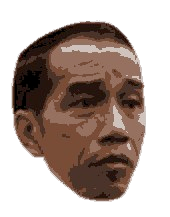

<style>
.glitch-img {
  position: fixed;
  top: 50%;
  left: 50%;
  width: 200px;
  height: auto;
  transform: translate(-50%, -50%);
  animation: shake 0.2s infinite, blur 3s infinite;
  z-index: -1;
  opacity: 0.8;
  filter: brightness(120%) contrast(140%);
}

@keyframes shake {
  0% { transform: translate(-50%, -50%) rotate(0deg); }
  25% { transform: translate(-49%, -51%) rotate(1deg); }
  50% { transform: translate(-51%, -49%) rotate(-1deg); }
  75% { transform: translate(-50.5%, -50.5%) rotate(0.5deg); }
  100% { transform: translate(-50%, -50%) rotate(0deg); }
}

@keyframes blur {
  0%, 100% { filter: blur(0px); }
  50% { filter: blur(3px); }
}
</style>
